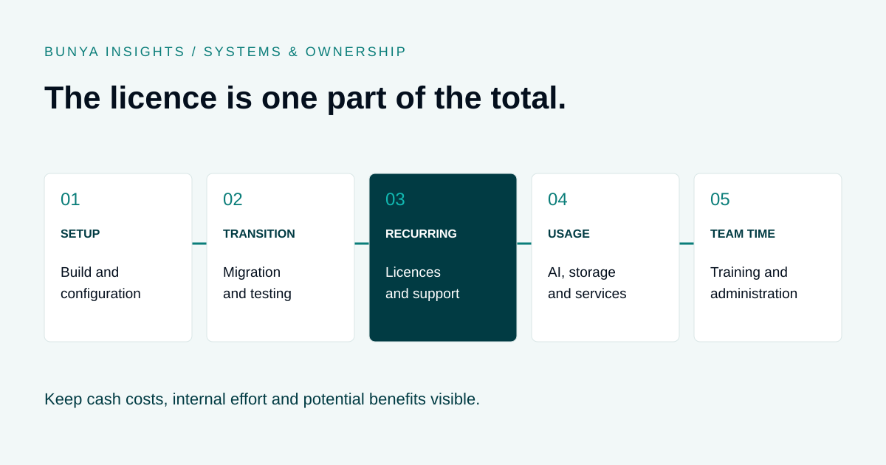

Systems & ownership
Financial Advice Software Costs: A Total Cost Comparison Checklist
Look beyond the licence price to the full cost of running the system.
THE SHORT ANSWER
Compare financial advice software using the same functional scope and time period. Include setup, migration, recurring licences, usage, support and internal effort. Keep unquoted costs visible and assess potential benefits separately. A lower monthly fee alone does not establish a lower total cost.

Compare the same scope first
The price of one licence tells you little if the two proposals cover different work. Write down the capabilities your firm needs, the users who need them and the tools that will remain alongside the new system.
Include client records, review workflows, document handling, reporting and any specialist modelling or research tools. Add calling and marketing only where they are part of the decision. Mark each requirement as included, separately priced, retained elsewhere or unconfirmed.
Use the same comparison period and assumptions for each option. Three years can be a useful planning horizon, but choose a period that reflects your decision and contract terms. A missing quote is an unknown cost, not a zero.
Build a total cost worksheet
Create a column for each proposal and record both the amount and its source. Separate supplier quotes from internal estimates. This structure can also help evaluate the cost of keeping the current setup.
| Cost area | Include | Ask |
|---|---|---|
| Initial delivery | Discovery, configuration, integrations and implementation. | What is excluded or subject to change? |
| Transition | Exports, cleanup, migration, testing and overlapping systems. | Who pays for rejected records or extra trial runs? |
| Recurring services | Licences, retained tools, support and carrier services. | Which users or modules attract charges? |
| Variable usage | AI consumption, storage and other metered services. | What usage assumptions and limits apply? |
| Internal effort | Training, testing, administration and project ownership. | How many hours will each role contribute? |
| Change and exit | Enhancements, handover, exports and transition assistance. | What does the agreement provide? |
Keep currency and tax treatment consistent across the worksheet. Record price validity, renewal assumptions and any minimum commitments alongside the numbers.
Worked example: compare cash cost and team effort
Illustrative figures only, in AUD excluding GST. These are invented planning inputs, not Bunya prices, competitor quotes or market averages. Assume identical functional scope and a three-year period with unchanged recurring charges.
| Item | Option A | Option B |
|---|---|---|
| Setup and migration | $12,000 | $30,000 |
| Annual licences and support | $24,000 | $18,000 |
| Annual usage allowance estimate | $3,000 | $4,000 |
| Three-year cash cost | $93,000 | $96,000 |
| Internal rollout effort at $60/hour | 100 hours = $6,000 | 180 hours = $10,800 |
| Cash plus valued rollout effort | $99,000 | $106,800 |
The cash calculation is setup plus three times annual recurring and estimated usage costs. Internal rollout effort is shown separately because salaried staff time may not create an additional cash payment, but it still consumes capacity.
Option B’s lower recurring service charge does not make it cheaper over this period. Nor does Option A’s lower total prove it is the better fit. Before deciding, check ongoing administration, future changes, unquoted items and the workflows each option actually supports.
Model AI usage and growth explicitly
For any metered component, ask the supplier to explain the charging unit and the usage assumption behind the estimate. A pilot should help establish the workload rather than relying on an unexplained allowance.
Build a baseline and a higher-use scenario. Consider more users, more client work, longer source documents, storage growth and repeated processing. Keep uncertain inputs visible and ask how spend can be monitored or limited.
If a service is already covered by an existing agreement, count only the additional cost attributable to this decision. Equally, do not assume that existing Microsoft access includes every proposed licence, integration or AI service.
Keep benefits separate from the cost total
Estimate possible benefits in a separate section so optimistic savings do not hide a known commitment. Distinguish time released, additional revenue and actual spending reductions.
For example, a measured saving of 15 minutes across 20 weekly tasks would release five hours a week. It would not automatically reduce payroll or create five billable hours. The team needs a practical use for that capacity, and the saving must hold after review and correction work is included.
Read how financial advisers can reduce admin and increase capacity for a way to examine the underlying workflow.
Ownership changes the responsibilities
A firm-owned build still needs licensing, administration, maintenance and support. A subscription also needs internal ownership of configuration, training and supplier management. Identify who performs each task and where its cost appears.
For Bunya, compare the defined build scope with Microsoft licensing, usage, third-party services and agreed support. The contract should explain delivered components, ownership rights, documentation and handover.
Use the build-versus-buy guide for the broader decision, and the Xplan comparison when that is your current platform.
Questions to resolve before choosing
- Are the same users, capabilities and support responsibilities covered?
- Which prices are confirmed, estimated or missing?
- What changes with headcount, usage or storage growth?
- What happens at renewal or when a minimum commitment ends?
- Which integrations and specialist tools remain separately funded?
- How much internal time is needed for rollout and ongoing administration?
- What does support include, and how are enhancements charged?
- What are the export, handover and transition arrangements?
For migration costs, use the CRM migration checklist to make the work concrete before requesting a quote.
Common questions
How much does financial advice software cost?
There is no single figure that describes every firm’s requirements. Request a quote for your users, required capabilities, migration and support, then add retained tools and internal effort.
Is a one-off build cheaper than a subscription?
It depends on the scope, comparison period and ongoing responsibilities. Compare complete costs across the same period rather than comparing an initial build fee with one month of subscriptions.
Should staff time count as a software cost?
Show it separately from cash expenditure. Training, testing and administration take time away from other work even if the staff are already employed.
Can we treat AI time savings as guaranteed?
No. Measure the full workflow during a pilot, including corrections and review, then test whether the saving persists in everyday use.
What should we bring to a Bunya pricing discussion?
Bring current systems and costs, user numbers, important workflows, known migration issues and the outcomes you want to improve. Those inputs help define a meaningful Blueprint and quote.